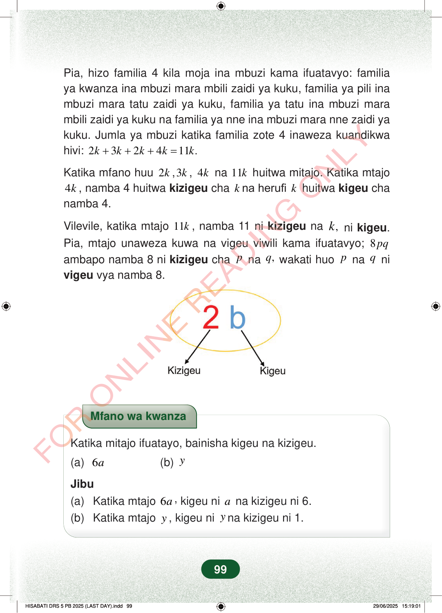

Pia, hizo familia 4 kila moja ina mbuzi kama ifuatavyo: familiaya kwanza ina mbuzi mara mbili zaidi ya kuku, familia ya pili inambuzi mara tatu zaidi ya kuku, familia ya tatu ina mbuzi marambili zaidi ya kuku na familia ya nne ina mbuzi mara nne zaidi yakuku. Jumla ya mbuzi katika familia zote 4 inaweza kuandikwahivi:232411.kkkkk+++=Katika mfano huu2k,3k,4kna11khuitwa mitajo. Katika mtajo4k, namba 4 huitwakizigeuchakna herufikhuitwakigeuchanamba 4.Vilevile, katika mtajo11k, namba 11nikizigeuna,knikigeu.Pia, mtajo unaweza kuwa na vigeu viwili kama ifuatavyo;8pqambapo namba 8 nikizigeuchapna,qwakati huopnaqnivigeuvya namba 8.Mfano wa kwanzaKatika mitajo ifuatayo, bainisha kigeu na kizigeu.(a)6a(b)yJibu(a)Katika mtajo6a,kigeu niana kizigeu ni 6.(b)Katika mtajoy, kigeu niyna kizigeu ni 1.99
Pia, hizo familia 4 kila moja ina mbuzi kama ifuatavyo: familia ya kwanza ina mbuzi mara mbili zaidi ya kuku, familia ya pili ina mbuzi mara tatu zaidi ya kuku, familia ya tatu ina mbuzi mara mbili zaidi ya kuku na familia ya nne ina mbuzi mara nne zaidi ya kuku. Jumla ya mbuzi katika familia zote 4 inaweza kuandikwa hivi: 2 3 2 4 11 . k k k k k + + + =
Katika mfano huu 2 k , 3 k , 4 k na 11 k huitwa mitajo. Katika mtajo
4 k , namba 4 huitwa kizigeu cha k na herufi k huitwa kigeu cha namba 4.
Vilevile, katika mtajo 11 k , namba 11 ni kizigeu na , k ni kigeu . Pia, mtajo unaweza kuwa na vigeu viwili kama ifuatavyo; 8 pq ambapo namba 8 ni kizigeu cha p na , q wakati huo p na q ni vigeu vya namba 8.
Mfano wa kwanza
Katika mitajo ifuatayo, bainisha kigeu na kizigeu.
(a) 6 a (b) y
Jibu (a) Katika mtajo 6 a , kigeu ni a na kizigeu ni 6. (b) Katika mtajo y , kigeu ni y na kizigeu ni 1.
99
Pia, hizo familia 4 kila moja ina mbuzi kama ifuatavyo: familia ya kwanza ina mbuzi mara mbili zaidi ya kuku, familia ya pili ina mbuzi mara tatu zaidi ya kuku, familia ya tatu ina mbuzi mara mbili zaidi ya kuku na familia ya nne ina mbuzi mara nne zaidi ya kuku.Jumla ya mbuzi katika familia zote 4 inaweza kuandikwa hivi: <math><mrow><mn>2</mn><mi>k</mi><mo>+</mo><mn>3</mn><mi>k</mi><mo>+</mo><mn>2</mn><mi>k</mi><mo>+</mo><mn>4</mn><mi>k</mi><mo>=</mo><mn>11</mn><mi>k</mi></mrow></math>.Katika mfano huu 2k, 3k, 4k na 11k huitwa mitajo.Katika mtajo 4k, namba 4 huitwa kizigeu cha k na herufi k huitwa kigeu cha namba 4.Vilevile, katika mtajo 11k, namba 11 ni kizigeu na k, ni kigeu.Pia, mtajo unaweza kuwa na vigeu viwili kama ifuatavyo; 8pq ambapo namba 8 ni kizigeu cha p na q, wakati huo p na q ni vigeu vya namba 8.Katika mtajo 2b, namba 2 ni kizigeu na herufi b ni kigeu.KizigeuKigeuMfano wa kwanzaKatika mitajo ifuatayo, bainisha kigeu na kizigeu.(a) 6a(b) yJibu(a) Katika mtajo 6a, kigeu ni a na kizigeu ni 6.(b) Katika mtajo y, kigeu ni y na kizigeu ni 1.